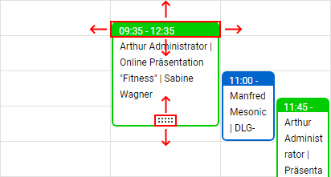
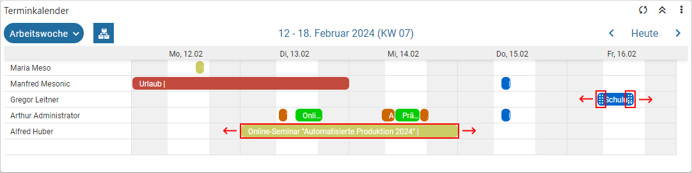
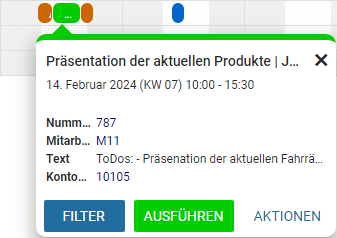

Wenn CRM-Fälle als Basis des Kalenders verwendet werden, so können folgende Datumsfelder für die Anzeige genutzt werden:
ü "Kalender Startdatum" und / oder "Kalender Enddatum"
ü "Startdatum" und / oder "Enddatum"
ü "Eskalationsdatum"
Das Besondere an dem CRM-Kalender ist die Interaktivität. D.h. die Termineinträge können innerhalb des Kalenders verschoben werden, was wiederum eine Änderung der Datumsfelder im CRM-Fall zur Folge hat (entsprechende Berechtigungen vorausgesetzt). Welche Datumsfelder dabei geändert werden, hängt wiederum davon ab, welche zur Power Report - Widgets - Kalender genutzt werden.
Achtung
Wurde keines der oben aufgeführten Datumsfelder in den Aufbau der Liste hinterlegt, so wird automatisch das Feld "Datum Schritt geschrieben" in den Kalender übergeben. Über dieses Feld ist keine Interaktion möglich!
Hinweis
Folgende Punkte sind bei einem Drag & Drop zu beachten:
ü CRM-Berechtigungen
Ob eine Drag
& Drop überhaupt möglich ist, hängt bei CRM-Workflows von den
CRM-Berechtigungen ab.
ü Enddatum ohne Inhalt
Sollte das
(in den Kalendereinstellungen hinterlegt) "Enddatum" im CRM-Fall keinen Inhalt
aufweisen, so ist die Anzeige innerhalb des Kalenders gewährleistet (sofern das
"Startdatum" mit Inhalt vorhanden ist), aber ein Drag & Drop ist nicht
möglich.
ü Speicherung
Die Speicherung des
neuen Zeitraums erfolgt direkt im CRM-Fall, d.h. es geht keine Vorlage auf,
welche extra bestätigt werden muss.
ü Ansicht "Jahre" und "Agenda"
In
der Jahres- und Agenda-Ansicht wird ein Drag & Drop nicht unterstützt.
ü Ansicht "Tag", "Woche" und
"Arbeitswoche"
In der ungruppierten Tages-, Wochen- und Arbeitswochen-Ansicht
steht ein Drag & Drop bei Ganztagesterminen nicht zur Verfügung.
ü Ansicht "Monat"
In der
ungruppierten Monats-Ansicht können Termine nur tageweise verschoben werden.
Beispiele
ü Drag & Drop - ungruppierte
Kalender

ü Drag & Drop - gruppierte
Kalender

Tooltip

Im Tooltip eines CRM-Kalender werden automatisch die Buttons "Ausführen" und "Weitere Aktionen" zur Verfügung gestellt.
Ø Filter [optional]
Wurde in den Einstellungen ein Filterfeld hinterlegt, so kann durch Anwahl des Buttons "Filter" der Quickfilter ausgelöst werden.
Ø Ausführen
Die zuletzt verwendete "Aktion" wird ausgeführt.
Ø Weitere Aktionen
Durch Anwahl dieses Buttons stehen die folgenden Aktionen, bezogen auf den CRM-Fall, zur Verfügung:
ü Fallansicht
ü Bearbeiten
Farbgebung
Die Farbgebung der CRM-Fälle kann pro CRM-Schritt gesteuert werden. Hierfür steht zum einen die Option "Farbauswahl", sowie die Folgeaktion "76 - Farbauswahl Vorlage", zur Verfügung.